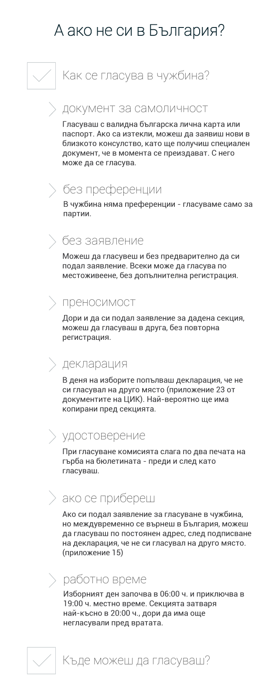

![Защо е важно да гласуваш?
След преброяване на бюлетините
240 мандата се разпределят между партии и коалиции според спечелените гласове.
борбата на големите
Колкото повече мандати спечели дадена партия, толкова по-голяма е нейната законодателна власт.
160
мандата
Решенията за промени в конституцията се вземат с квалифицираното мнозинство на 2/3 от всички народни представители.
Справка: чл. 155, ал. 2 от Конституцията
121
мандата
Народното събрание приема законите и другите актове с мнозинство повече от половината от присъстващите народни представители.
Справка: чл. 81, ал. 2 от Конституцията
на границата
Право на участие при разпределяне на мандатите на национално ниво имат партиите и коалициите от партии, получили не по-малко от четири на сто от действителните гласове в страната и извън страната.
Справка: чл. 297, ал. 2 от Изборния кодекс
4%
от действителните
гласове
10
депутатски места
шанс за малките
Държавна субсидия се отпуска ежегодно и на партиите, които не са представени в Народното събрание, но са получили не по-малко от едно на сто от всички действителни гласове на последните парламентарни избори.
държавна субсидия
Справка: чл. 26 от Закона за политическите партии
Легитимност на властта
При по-висока избирателна активност един депутат представлява
по-голяма част от народа
Легитимността е едно от необходимите условия за стабилна държавна власт
Неутрализиране на купения вот
Колкото по-висока е избирателната активност, толкова по-малка е тежестта на
купените гласове
ниска
избирателна активност
висока
избирателна активност
Митът за преразпределение на гласовете
Само партиите и коалициите, които са събрали поне 4% от всички гласове, участват в разпределението на мандатите.
Гласовете, подадени за останалите партии (получили под 4%),
не се вземат предвид при изчисленията!](images/willvote-infographic_new.png)
Това е независима кампания дело на екип доброволци от

Целта е да се повиши избирателната активност и да се покаже, че всеки глас има силата да направи промяна.
Твоят глас е важен не само за изборите. Тук можеш да заявиш своята гражданска позиция като споделиш, че ще гласуваш и да призовеш твоите приятели да последват примера ти.
от приятелите ти. Така ще направят още човека.
Твоите приятели може да последват примера ти.
Призови ги, кажи на всички
Ще гласувам!Тук можеш да следиш колко човека са се присъединили към кампанията, а ако харесаш facebook страницата на „Ще гласувам“ редовно ще получаваш новини и факти за изборите
от приятелите ти. С теб станахме общо човека.

Карта на изборите в чужбина от Glasuvam.org